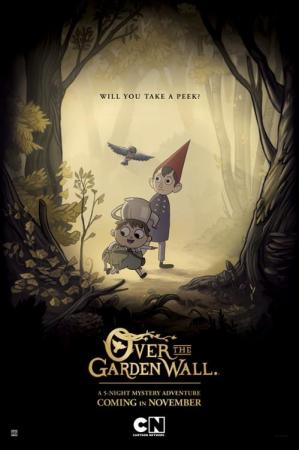

Mas alla del jardin |
||
|---|---|---|
|  | Sinopsis: Wirt y Greg son dos hermanos que se han perdido en Lo desconocido, un extraño bosque a la deriva en el tiempo, y que buscan el camino de regreso a casa. El mayor es responsable y temeroso; el pequeño, despreocupado, optimista y juguetón. Dos personalidades opuestas que, a lo largo del trayecto, contarán con la ayuda de un sombrío leñador y de un pájaro azul con bastante mal genio. |
Director:Katie Krentz,Patrick McHale Reparto:Elijah Wood, Collin Dean, Melanie Lynskey Año: 2014 Duracion:10 min Pais:Estados Unidos |
Criticas Profesionales:Robert Lloyd"Los episodios tejen una narración, y el lado atrevido y moderno de la miniserie mitiga su melancolía de cuento de hadas. |
Trailer |
Obtener:AlquilarComprar |
Registrate/Iniciar Sesion